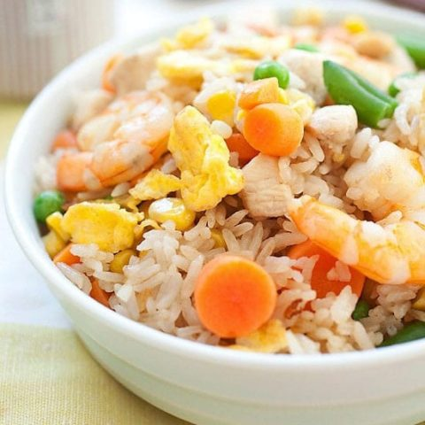

Fried Rice

About this recipe
Fried rice is a dish of cooked rice that has been stir-fried in a wok or a frying pan and is usually mixed with other ingredients such as eggs, vegetables, seafood, or meat. It is often eaten by itself or as an accompaniment to another dish.
Ingredients
- 2 tablespoons cooking oil
- 2 cloves garlic, minced
- 4 oz. (115 g) boneless and skinless chicken breast, cut into cubes
- 4 oz. (115 g) shrimp, peeled, shelled and deveined
- 1 cup frozen mixed vegetables, thawed
- 12 oz. (340 g) leftover steamed white rice
- 1 tablespoon fish sauce
- 1 tablespoon soy sauce
- 1/4 teaspoon oyster sauce
- 3 dashes ground white pepper
- 2 eggs, lightly beaten
- salt to taste
Steps
- Heat up a wok or pan with the oil.
- Add the garlic and stir fry until aromatic, follow by the chicken, shrimp, and mixed vegetables. Stir fry until the chicken and shrimp are half cooked.
- Add in the rice and stir well with the ingredients.
- Add thes fish sauce, soy sauce, oyster sauce, white pepper and continue to stir the fried rice for a couple of minutes.
- Using the spatula, push the rice to the side of the wok and make a "well" in the middle of the fried rice.
- Pour the beaten eggs in the "well." Wait for 30 seconds and then cover the eggs with the fried rice. Leave it for 30 seconds to 1 minute and continue to stir-fry so the eggs form into small pieces and mix well with the fried rice.
- Add salt to taste and do some quick stirs, dish out and serve hot.
Information sourced from: Rasa Malaysia and Wikipedia.